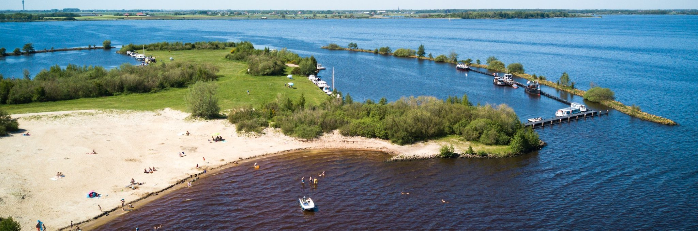

Welcome to the Lakes

There are many large and small lakes in the Frisian Lakes area, plus a number of them that are not directly in this South-Western part of Friesland, but are still commonly included when referring to the Frisian Lakes. Below is an incomplete list of the most prominent ones. Note that the Frisian names, here indicated in italic, are the official ones. The largest ones are indicated in bold.
List of Lakes in Frisia
- Heegermeer (Hegemer Mar)
- Fluessen (Fluezen)
- De Holken
- Morra (De Morra)
- Slotermeer (Friesland)
- Groote Brekken (Grutte Brekken)
- Koevordermeer (De Kûfurd)
- Langweerderwielen (Langwarder Wielen)
- Witte en Zwarte Brekken en Oudhof (Wite Brekken, Swarte Brekken en Aldhôf)
- Tjeukemeer (Tsjûkemar)
- Sneekermeer (Snitser Mar)
- Goëngarijpsterpoelen (Goaiïngarypster Puollen)
- Terkaplesterpoelen (Terkaplester Puollen)
- Idzegaasterpoel (Idzegeaster Poel)
- Grote Gaastmeer (Grutte Gaastmar)
- Zandmeer (Sânmar)
- Ringwiel
- Vlakke Brekken (Flakke Brekken)
- Oudegaasterbrekken (Aldegeaster Brekken)
- Idskenhuistermeer (Jiskenhúster Mar)
- Terhornsterpoelen (Terhernster Puollen)
- Terhornstermeer (De Hoarne)
- Brandemeer (Skarsterlân)|Brandemeer]] (Brandemar)
- Nannewijd (Nannewiid)
For more information Visit the
Wiki page